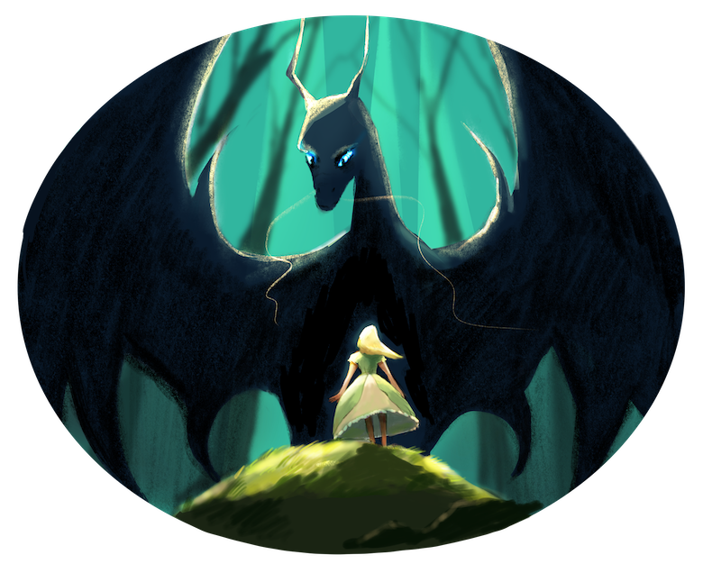

Once upon a time, there was a vivacious and lovely little princess. She knew that the fairy tale princess would be caught by the dragon and taken back to the castle one day. The king summoned the warriors to defeat the dragon to save the princess, usually. At the end of the story, the princess and the warrior would live a happy life together. So the beautiful little princess waited every day for that day to come. She was so eager to know what kind of person will be her prince because he waited for the dragon to come and catch her.
Until the little princess was almost 18 years old, the king began to arrange for her marriage. The little princess had been waiting for the dragon, the little princess decided not to wait any longer. She wanted to take the initiative to find the dragon, let the dragon catch her. So she quietly ran out of the city to the outside of the forest to look for the dragon.
In the dragon city, there was a tradition that every juvenile dragon needed to capture a princess to be considered an adult. Still, in recent years, the kingdom defence had become more robust, and the dragon had little chance of capturing the princess. One day, a juvenile dragon came to the forest for training. Suddenly, he heard a voice from the forest. He quietly went to the neighbourhood and found that it was a beautiful maiden. The maiden's signature blond hair showed that she was the princess of the neighbouring country.
Before he knew what to do, the little princess came running up to him. She jumped up and said, "I know that you are the dragon. I am the princess of the kingdom. Now I want you to take me back to the castle." The dragon was surprised and stand in a place that he did not know what to do. He did not think it would be so simple to kidnap the princess when he knew that the princess was only 17 years old. The dragon told the princess that he also needs to complete a task to find a chair lost in the world.
Hearing this, the princess happily told the dragon that she would help him find the chair. Because the princess was proficient in various countries' languages, it was easy to collect information. So the dragon took the opportunity to take the princess to find the chair. First, they came to a nearby kingdom, the Kingdom of the Dwarfs. Dragon used his magic to shrink the two of them. They successfully went into the Kingdom of the Dwarfs. They inquired about the chair's whereabouts, with a wise old man told them that this chair in a long time ago had lost in the world. The collectors were also looking for this chair because the man who found it could become the most powerful man on this planet.
Princess and dragon came to a cave. The cave was full of murals and frescoes about the production time, manufacturing methods, and the owner of this chair. They found that the chair should now be in the giant's kingdom when they were about to set off for the giant countries. Suddenly, a huge black panther appeared, and he told the dragon, "this chair is now split into three parts. One is the ground. To find this part, they must first find a blue rabbit."
The blue rabbit lived in a tree, he hid in the fruit of blueberry, so the princess and dragon came up with an idea: they went to eat all the blueberry on the tree, a total of three days and three nights. Until the last three blueberries, the hidden blue rabbit finally appeared. The blue rabbit was so angry that the princess and the dragon ate all the fruit. Still, the princess threatened the blue rabbit to eat the blue rabbit, blue rabbit panicked. He agreed to take out the chair. They came to a place, blue rabbit dug out the chair quickly. The dragon took the chair and left the kingdom of dwarves with the princess.
When they arrived in the land of the giants, the panther appeared again. The panther told them that the chair in the land of the giants was in the royal palace. They needed to break through the guards and go to the palace's highest part to find the chair. So they went to the castle and visited the king. The king told them that the queen lived in the tallest place and didn't like a visitor. The queen was locked up in a tower because she was insane. The queen saw the princess in the building and excitedly told her that the king was the mad one. Just when she wanted to seize the throne, the king locked her up in the tower. The dragon and the princess decided to help the queen regain her throne. The dragon summoned all the dragons to defeat the king. And the queen decided to give her part of the chair to the dragon.
The quest told dragon and princess the last part of the chair was in the princess kingdom. The princess was very afraid of the king taking her back to the domain and forcing her to marry. Quietly dressing up as the dragon's wife, she did not want the king to find her. When she returned to the kingdom, she found the king had been looking for her. The whole street was covered by her posters. The dragon saw a soldier, he told the soldier that he had found the princess. The dragon was hoping that he could give back the princess to the king in exchange for the chair's part back. The princess was so angry that the dragon took advantage of her. She told the king that she has been married to a dragon, so she can't match the prince in other countries. The king could not believe that the princess was already married to the dragon. So he ordered that the wedding be held in the castle. After they were married, the dragon could get the chair back.
When they get married, the king took out a chair. Finally, the dragon could happily collect three chairs. The chairs suddenly combined and became one, and it turned into a handsome knight. Knight, then, killed the dragon and fell in love with the princess. At the end of the story, they were Happy Ever After.